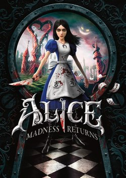
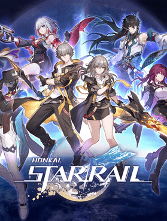
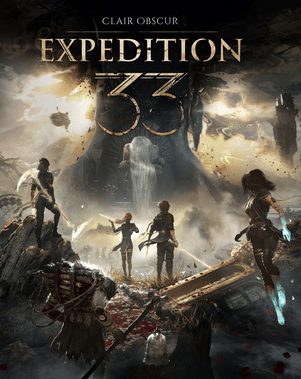

Castlevania: Symphony of the Night
Considered to be the most popular game in the series, this follows the disappearance of a famous vampire hunter who had slain Dracula years ago. The powerful vampire’s son, Alucard, is awakened to aid in relocating the hunter and vanquishing the evil responsible.

Dragon Age: Origins
The first game in the dark fantasy RPG series, you play as a Grey Warden destined to defeat a great corrupted foe and bring an end to the period of chaos Ferelden has been tangled in. To do this, you must travel through the land amid war and carnage to unite the kingdom’s reaches, recruiting members to your party along the way. The choices you make matter and the fate of the realm is in your hands.
Alice: Madness Returns
Set in a dark Victorian London, Alice is an orphan struggling to face the tragic loss of her family. In the process of understanding, she finds herself transported into a distorted, gothic Wonderland. There she must fight enemies who mirror her psychological conflicts, defeat the Infernal Train, and explore her own mind for the truth.

Dead Island
In the wake of a strange outbreak, the people of Banoi island are dropping like flies, becoming carnivorous undead. Survivors band together to live another day in their gory, confusing reality and learn quickly that zombies may be less frightening than man. The main character is at the forefront of helping different groups across the island as they are immune. The player chooses one of four characters, and each has their own specialties. Can you escape the island before it’s too late?

The Elder Scrolls V: Skyrim
Set in a high fantasy land, this continuation of the beloved series follows your character who discovers they are the Dragonborn of legend, a hero who will vanquish the recently awakened World-Eater. In a sprawling landscape of cities, bandits, magic, and side quests distracting you from the main plotline, Skyrim is full of stories to uncover and features joinable guilds and an active civil war. Players can sink years into a save file before ever finishing the game.

The Last of Us
You play as Joel, a hardened, grieving survivor two decades into a devastating fungal post-apocalypse, which mutated people into zombie-like monsters. After a chance encounter and a deal gone wrong, he is tasked with transporting Ellie, a young girl, across the collapsed United States. The purpose is unknown to him until a startling reveal--she may be the answer to saving their future. A future they have to survive long enough to see.

Stardew Valley
This beloved farming simulator allows you to create your own character who has moved from a depressing, mundane life in the city upon inheriting their grandpa's farm. In Pelican Town, you can build a new life full of hardworking skills like fishing and mining, planting seasonal crops, raising animals, and maintaining relationships with the villagers. There are also mysteries to uncover about the town, areas to explore, treasure to find, and events to celebrate.

A Plague Tale: Innocence
Among the backdrop of 14th century France plagued by rats and disease, siblings Amicia and Hugo must survive as they are hunted by the Inquisition. Hugo suffers from a strange affliction which connects him to the rats somehow, and Amicia will do whatever it takes to protect him from the unknown. Fleeing their home and navigating puzzles of rats and soldiers with fire and stealth, they have only each other now.

Death Stranding
Sam Porter Bridges is a delivery man in an apocalyptic America, made such by a cataclysmic event called a Death Stranding, which created a rift between life and death. Ghostly entities spawned from this and present danger at every second, but the peculiar technology called BBs can alert of their presence. Sam with his BB in tow is tasked with journeying through a beautiful and brutal landscape, delivering cargo and connecting cities throughout America in the hopes of rebuilding something stronger.

Tchia
Inspired by the culture of New Caledonia, Tchia follows a young girl living on her island in peace, when her father is kidnapped by the villainous Meavora. She sets out on her own to sail a raft across the sea, finding treasure, playing her ukelele, and harnessing her new soul power which allows her to travel efficiently. She must exact justice for those Meavora has hurt and bring her father home, while grappling with the truth about her family.

Honkai: Star Rail
In this turn-based RPG, you play as the Trailblazer, who has an immense power source implanted inside of them. The Astral Express takes you under their wing upon discovering you unconscious during a large attack, and with them you explore different planets and the conflicts within them, meeting friend and foe. The Trailblazer also discovers more about the strange Stellaron inside of them and the forces in control of everything along the way.

Infinity Nikki
In her attic one day, Nikki and her companion Momo find a mysterious dress which transports her into Miraland, a land of fantasy and fashion. She becomes a Stylist upon learning of darkness corrupting the lands and the only way to stop it is by exploring and collecting pieces of Miracle Outfits across the realm, which she can defeat the evil with. Nikki hopes that in the end, she and Momo will find their way home.

Clair Obscur: Expedition 33
Drawing inspiration from both fantasy and sci-fi, this turn-based RPG features visuals heavily inspired by the French Belle Époque. The story follows a group of survivors on a dangerous mission to defeat the Paintress, a mysterious entity who inches their world toward disaster every year. Every effort before theirs has failed, but perhaps this one might be different.